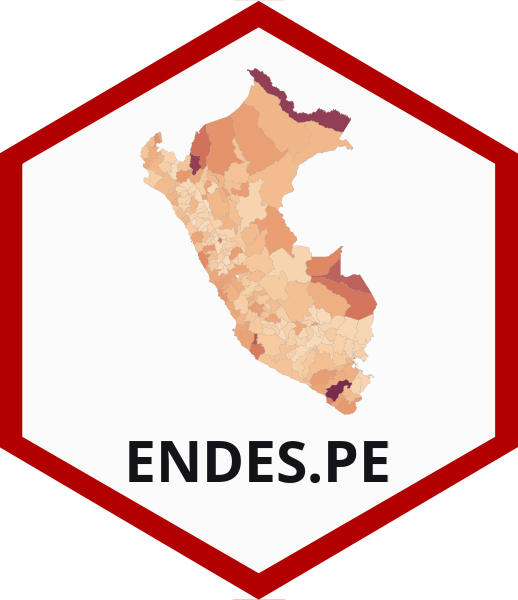

ENDES.PE 
Paquete de manejo y obtención de información de la Encuesta Demográfica y de Salud Familiar de Perú
Descripción
ENDES.PE es un paquete de manejo y obtención de información de la Encuesta Demográfica y de Salud Familiar del Perú. Este paquete permite la descarga de las bases de datos de la ENDES desde el portal Microdatos del INEI.
Instalación
Para instalar el paquete en R por medio del repositorio en GitHub ejecutar el comando:
devtools::install_github("horaciochacon/ENDES.PE")Uso de consulta_endes()
La función consulta_endes() descarga la información de la web de INEI en formato .sav. Los argumentos necesarios son:
- periodo: El año de la encuesta (por ejemplo “2015”)
- codigo_modulo: El código del módulo de la encuesta según la web de INEI (por ejemplo “64”,“65”,“413”, etc.)
- base: La base de datos específica que se quiere descargar (por ejemplo “RECH1”,“RECH0”, etc.)
- guardar: Si se desea descargar el archivo .sav o se quiere cargar como data frame directamente (usando read_sav del paquete haven)
- ruta: Si guardar es TRUE, cuál será la ruta donde se descargará. Esta es la ruta tomando como base el working directory (../ruta)
Ejemplo
# Guardando la base de datos en la carpeta "Data" del área de trabajo (working directory)
consulta_endes(periodo = 2015, codigo_modulo = 64, base = "RECH1", guardar = TRUE, ruta = "Data")
# Cargando las base de datos
salud <- consulta_endes(periodo = 2017, codigo_modulo = 414, base = "CSALUD01", guardar = FALSE)
persona <- consulta_endes(periodo = 2017, codigo_modulo = 64, base = "RECH1", guardar = FALSE)
vivienda <- consulta_endes(periodo = 2017, codigo_modulo = 65, base = "RECH23", guardar = FALSE)
hogar <- consulta_endes(periodo = 2017, codigo_modulo = 64, base = "RECH0", guardar = FALSE)Uso de unir_endes()
La función unir_endes() permite la unión (tipo left_join) de dos bases de datos de la ENDES. Los argumentos de la función son:
- base1: Base de datos número 1.
- base2: Base de datos número 2.
- tipo_union: Si el argumento es “individual” la unión se hace al nivel de individuo, si el argumento es “hogar”, la unión se realiza a nivel de hogar.
Ejemplo
# Utilizando las bases del ejemplo anterior unimos base de personas ("individual")
union_individuos <- unir_endes(base1 = persona, base2 = salud, tipo_union = "individual")
# Utilizando las bases del ejemplo anterior unimos base de Hogar y vivienda ("hogar")
union_vivienda <- unir_endes(base1 = hogar, base2 = vivienda, tipo_union = "hogar")Información adicional
Este es un paquete experimental, los datos e información obtenida no son reponsabilidad del investigador. Para mayor información revisar la documentación de la ENDES en la página de INEI.
Contacto
- Horacio Chacón-Torrico
- horacio.chacon.t@upch.pe | hchaconto@ucientifica.edu.pe